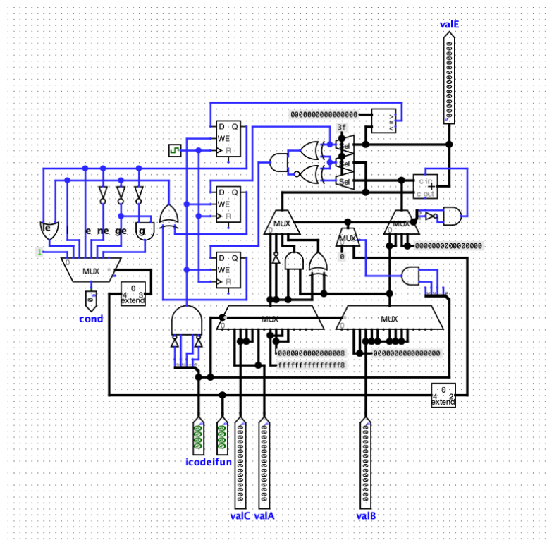

Reinforcement
Learning
Implemented using Tensorflow and Keras.
Optimized an agent's actions in a 2d environment using the Q-learning policy. The environment consists of a grid of sixteen squares which contain holes and a reward in the bottom right corner. Each time the agent reaches the reward, the Q-function is updated until it converges.

Courtesy of OpenAI
CPU Architechture
y86 Instruction Set
This was the final project for the class Computer Organization and I worked with 2 teammates. We designed the components for a sequencial CPU including: Fetch, Decode, Execute, Memory, and Write. We tested the CPU with programs written in binary and it successfully ran the bubble sort algorithm.

Simulated using Logism